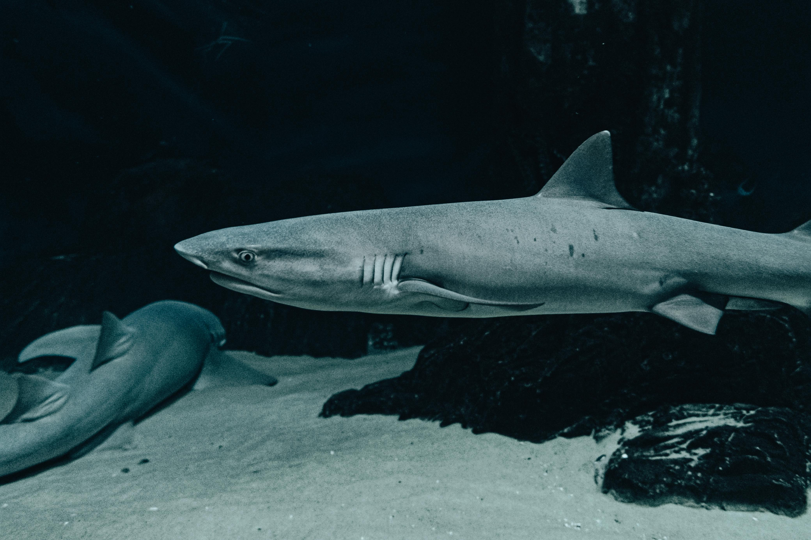
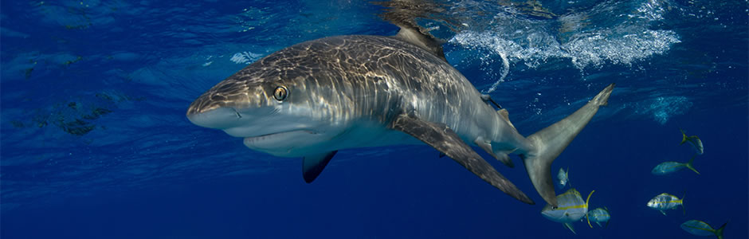
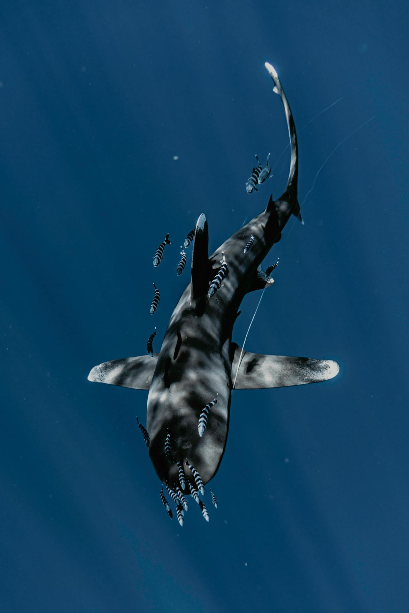

Os Tubarões!
Conheça um dos predadores mais fascinantes do oceano
Fatos rápidos
Os tubarões são peixes e a maioria tem a forma típica do corpo fusiforme. Como outros peixes, os tubarões são ectotérmicos (sangue frio), vivem na água, têm barbatanas e respiram com brânquias. No entanto, os tubarões diferem dos peixes Osteichthyes (peixes ósseos). Uma diferença é que o esqueleto de um tubarão é feito de cartilagem em vez de osso. Outra diferença visível é que os peixes ósseos tendem a ter uma única fenda branquial, enquanto todas, exceto duas espécies de tubarão, têm 5 fendas branquiais.
Comportamento

Embora tubarões sejam basicamente anti-sociais, muitas espécies demonstram vários graus de comportamento social. Por exemplo, os tubarões-martelo geralmente andam em cardumes.
Apenas 32 espécies de tubarões foram identificadas com ataques a humanos ou barcos. Essas espécies têm três características em comum: atacam peixes ou mamíferos marinhos, crescem até um tamanho grande e frequentam águas costeiras mais quentes, onde os nadadores tendem a estar.
Habitat
Como um grupo, os tubarões são adaptados para uma ampla variedade de habitats aquáticos. Várias espécies habitam habitats costeiros rasos, habitats do fundo do oceano em águas profundas e oceano aberto. Os tubarões vivem em todo o mundo, desde lagoas tropicais quentes até mares polares. Alguns até habitam lagos e rios de água doce.
Conheça algumas espécies
Conheça o majestoso tubarão branco, o gigantesco tubarão baleia, o peculiar tubarão martelo e o grandioso nadador tubarão de pontas negras do recife.
Fatos sobre os tubarões
Embora grandes ataques de tubarão branco a humanos estejam documentados, eles geralmente são raros. Estudos recentes sugerem que os tubarões-brancos podem achar os humanos intragáveis. Os ataques provavelmente ocorrem quando um tubarão confunde um humano com uma foca ou leão-marinho, sua principal presa.
O tubarão baleia pode ser facilmente identificado por seu tamanho titânico e sua coloração distinta com padrões de pontos claros e listras em um fundo azul a cinza.
O nome do tubarão martelo é devido ao formato curioso de sua cabeça: duas grandes extensões planas e laterais, que lhes permite girar com mais rapidez que outros tubarões. Mede até 4,2 metros de comprimento. Alimenta-se de animais escondidos na areia no fundo do mar.
Natação ativa e forte, o ponta preta é normalmente encontrado perto do fundo ou no meio da água se nadar em águas mais profundas. Ao nadar em águas particularmente rasas, suas barbatanas dorsais salientes são prontamente identificadas pelos observadores. Eles são frequentemente vistos nadando sozinhos ou em pequenos grupos.
Para mais informações sobre os tubarões e outros animais marinhos visite seaworld.com